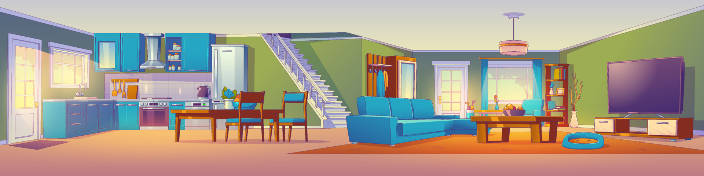

Check in is from 4 pm and check out is by 11 am.
If you find that anything is missing or you need more information about anything, please contact Charlotte and Bob on 01768 840963, 07517464506 or 07447995915.
There’s a switch in the cupboard under the stairs for the hot water. This is an immersion heater. Please turn it off overnight or when you go out for the day.
The cottage is heated by electrical, wall-mounted radiators. Unless it is a cold day, we will leave them off for your arrival. They can be set to come on automatically, but we have not done this. To use the manual mode, switch them on at the plugs. The panel will display Pr:Hd. Press the hand symbol and the temperature of the room will be displayed. Use the plus and minus keys to select the temperature you want, then press ok. The display will show the room temperature again. Please do not leave radiators on at a high temperature when you go out. The switch for the towel rail in the bathroom is in the double bedroom.
When you depart, please leave the keys locked in the key safe.
We have a private company, Cumbria Waste, which takes away waste. They will sort through it for recyclables, so you can put everything in the bin. If you use more than one bin bag, please leave full bags, securely sealed in the bin next to your parking place. Please don’t use this bin for litter which is not in a bin bag.
Please leave the oven switch (above the drainer) on; switching it off will cause the clock to unset, and the oven needs the clock to be set in order to work. It’s a combi-stove/oven; one knob is for temperature, and the other is to select the kind of grill/oven required.
This is operated by the same wall switch as the oven; it’s touch control - select the button with |, then select the hotplate, then use plus/minus to change the temperature. If LO appears when you first turn it on, the hob is locked; unlock it by holding your finger on the padlock button, until the LO disappears.
To log into wi-fi, select BTHub6-FRK2 on your device and enter the password khfqC9LkwRP3.
These will be checked between each stay, but if you find a light or control not working during your stay, please contact us using the above numbers.
After any guest, Arch Cottage is always cleaned and checked ready for the next guest. However, we do expect you to leave the property tidy and reasonably clean. There are cleaning materials in the under-stairs cupboard, should you need to use any of them.
The lift is available by prior arrangement. If you have not requested its use, it will be deactivated for your stay. Please don’t attempt to use it, and ensure that children are supervised around it.
